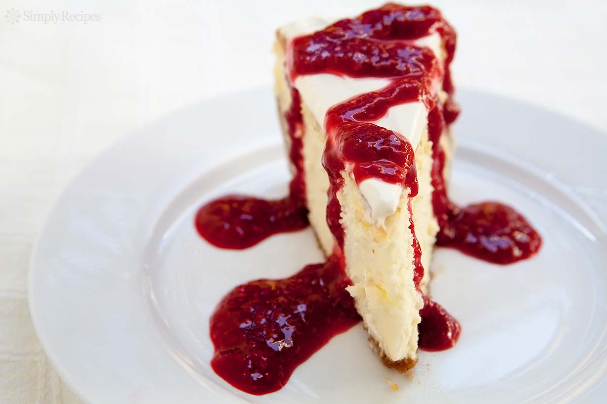
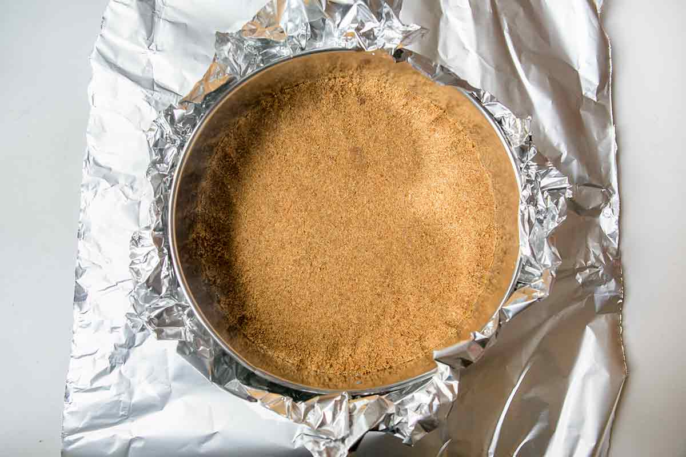
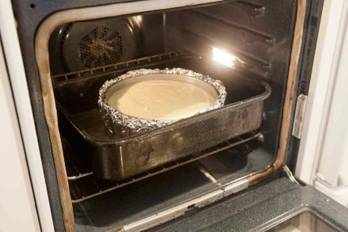
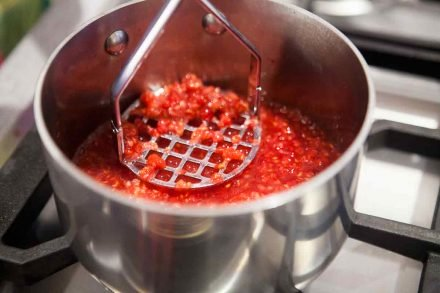

How to Make Cheesecake
By Matthew G.

Introduction:
This recipe is to make "the best, silkiest, creamiest cheesecake EVER". It will explain the required materials, and the steps you need to take to make it.
Materials:
- For the crust:
- 1 ¾ cups (230g) of Graham cracker crumbs (from about 15 Graham crackers)
- 2 Tbsp sugar
- Pinch salt
- 4 Tbsp plus 1 teaspoon (60g) unsalted butter (if using salted butter, omit the pinch of salt), melted
- For the filling:
- 2 pounds cream cheese (900g), room temperature
- 1 ⅓ cup granulated sugar (270g)
- Pinch of salt
- 2 teaspoons vanilla extract
- 4 large eggs
- ⅔ cup sour cream (160 ml)
- ⅔ cup heavy whipping cream (160 ml)
- For the sour cream topping:
- 2 cups sour cream (475 ml)
- ⅓ cup powdered sugar (35g)
- 1 teaspoon vanilla extract
- For the raspberry sauce:
- 12 ounces (340g) fresh raspberries
- ½ cup granulated sugar (100g)
- ½ cup water (120 ml)
- Special equipment:
- 9-inch, 2 ¾-inch high springform pan
- Heavy-duty, 18-inch wide aluminum foil
- A large, high-sided roasting pan
Recipe:
-

Prepare the Crust:
- Process graham crackers, mix with sugar, salt, butter: Pulse the graham crackers in a food processor or blender until finely ground. Put in a large bowl, and stir in the sugar and salt. Stir in the melted butter.
- Preheat oven to 350°F (175°C), with rack in lower third of oven.
- Press the graham cracker crumbs into the bottom of the springform pan: Gently press down on the crumbs using your fingers, until the crumbs are a nice even layer at the bottom of the pan, with maybe just a slight rise along the inside
edges of the pan.
- Bake the crust: Place the pan on a baking sheet and bake at 350°F (175°C) for 10 minutes. Remove from the oven and let cool. While the crust is cooling, you can skip ahead and start on the filling. Wait until the crust has cooled to
wrap the pan in foil in the next step.
- Triple wrap pan in heavy duty foil: Prepare the springform pan so that no water leaks into it while cooking. Place a large 18-inch by 18-inch square of heavy duty aluminum foil on a flat surface.
- Place the springform pan in the middle of the foil. Gently fold up the sides of the foil around the pan. Make sure to do this gently so that you don't create any holes in the foil.
- Press the foil around the edges of the pan. Place a second large square of foil underneath the pan, and repeat, gently folding up the sides of the foil around the pan and pressing the foil against the pan.
- To be triply safe, repeat with a third layer of heavy duty foil. Gently crimp the top of the foil sheets around the top edge of the pan.
-

Make the Cheescake:
- Beat cream cheese, then sugar: Cut the cream cheese into chunks and place in the bowl of an electric mixer, with the paddle attachment. Mix on medium speed for 4 minutes until smooth, soft and creamy. Add the sugar, beat for 4 minutes
more.
- Add salt, vanilla, then eggs, then sour cream: Add the salt and vanilla, beating after each addition. Add the eggs, one at a time, beating for one minute after each addition. Add the sour cream, beat until incorporated.
- Add the heavy cream, beat until incorporated. Remember to scrape down the sides of the mixer bowl, and scrape up any thicker bits of cream cheese that have stuck to the bottom of the mixer that paddle attachment has failed to incorporate.
- Prepare pan and boiling water: Place the foil-wrapped springform pan in a large, high-sided roasting pan. Prepare 2 quarts of boiling water.
- Pour filling into pan: Pour the cream cheese filling into the springform pan, over the graham cracker bottom layer. Smooth the top with a rubber spatula.
- Place in oven: Place the roasting pan with the springform pan in it, in the oven, on the lower rack.
- Carefully pour the hot water into the roasting pan (without touching the hot oven), to create a water bath for the cheesecake, pouring until the water reaches halfway up the side of the springform pan, about 1 ¼ inches.
- Bake at 325°F (160°C) for 1 ½ hours.
- Turn off the heat of the oven. Crack open the oven door 1-inch, and let the cake cool in the oven, as the oven cools, for another hour. This gentle cooling will help prevent the cheesecake surface from cracking.
- Chill for 4 hours. Cover the top of the cheesecake with foil, so that it doesn't actually touch the cheesecake. Chill in the refrigerator for a minimum of 4 hours, or overnight.
-

Finish and Serve the Cheesecake:
- Prepare the sour cream topping: Place sour cream in a medium sized bowl, stir in the powdered sugar and vanilla, until smooth. Chill until you are ready to serve the cake.
- Note that this recipe produces enough sour cream topping for a thick topping and some extra to spoon over individual pieces of cheesecake, if desired. If you would like a thinner layer of topping and no extra, reduce the sour cream
topping ingredients in half.
- Prepare the raspberry sauce: Place raspberries, sugar, and water in a small saucepan. Use a potato masher to mash the raspberries. Heat on medium, whisking, about 5 minutes, until the sauce begins to thicken. Remove from heat. Let
cool.
- Prepare the cheesecake to serve: Remove the cake from the refrigerator. Remove the foil from the sides of the pan, and place the cake on your cake serving dish. Run the side of a blunt knife between the edge of the cake and the pan.
- Dorie recommends, and we've done with success, that you use a hair dryer to heat the sides of the pan to make it easier to remove. Open the springform latch and gently open the pan and lift up the sides.
- Spread the top with the sour cream mixture. Serve plain or drizzle individual slices with raspberry sauce.